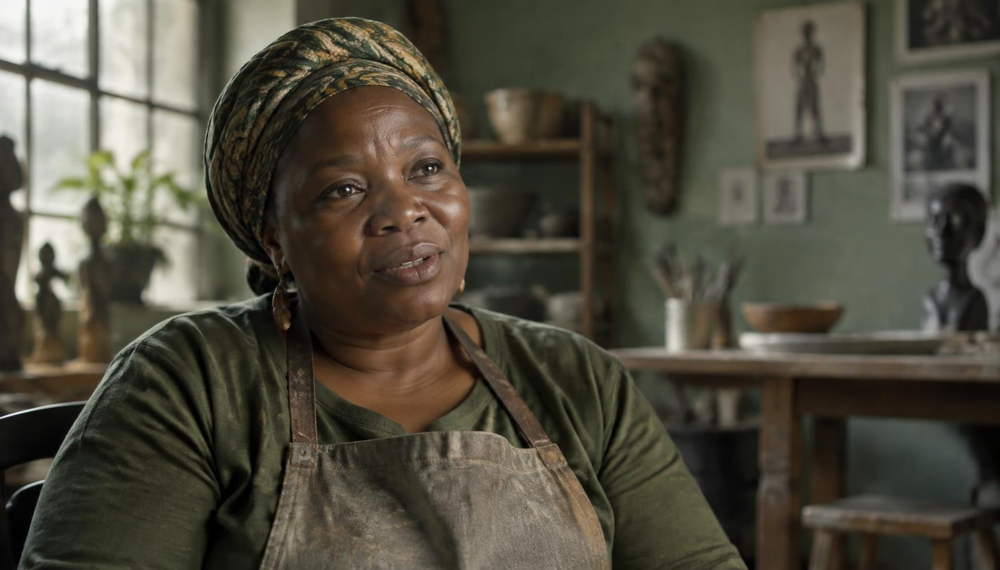
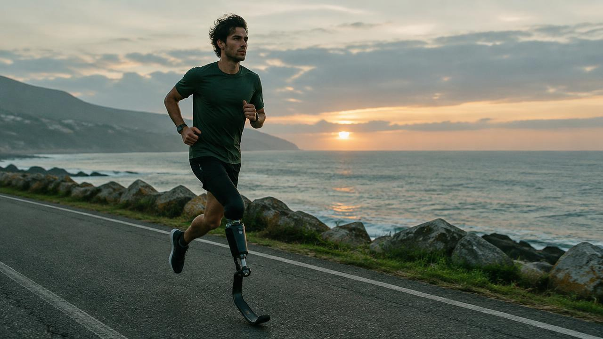

ResilienceCC captions available
12:04
A Journey of Courage
After a fire destroyed her workshop, Amara rebuilt her life — and her community — one bowl at a time.
Documentary storytelling
Discover powerful human experiences through films, audio stories, and the voices that connect us.

Featured FilmShort documentaries, captioned in English with full transcripts.
After a fire destroyed her workshop, Amara rebuilt her life — and her community — one bowl at a time.

SportCC captions available 8:31 FamilyCC captions available
6:47
FamilyCC captions available
6:47
Audio stories
Intimate voice recordings for your commute, your walk, or a quiet moment.
Audio story · 14:20
A retired fisherman reads the letters he never sent.
Fisherman: Dear Elena. The boats went out at four this morning, and I stayed on the quay, as I always do.
Fisherman: I never posted this one. I told myself the sea had your address by now, and the tide would carry it.
Fisherman: If you ever read this, know that I kept the lamp lit.
Audio story · 9:05
Diego on learning to trust his body again.
Diego: The first morning I ran again, I only made it to the second lamppost.
Diego: My body felt like a borrowed coat. It took months before it felt like mine.
Diego: Now I run toward the sunrise. Trust comes one stride at a time.

Why StoryCast exists
We record the stories mainstream media skips — and make sure everyone can watch, hear, or read them.